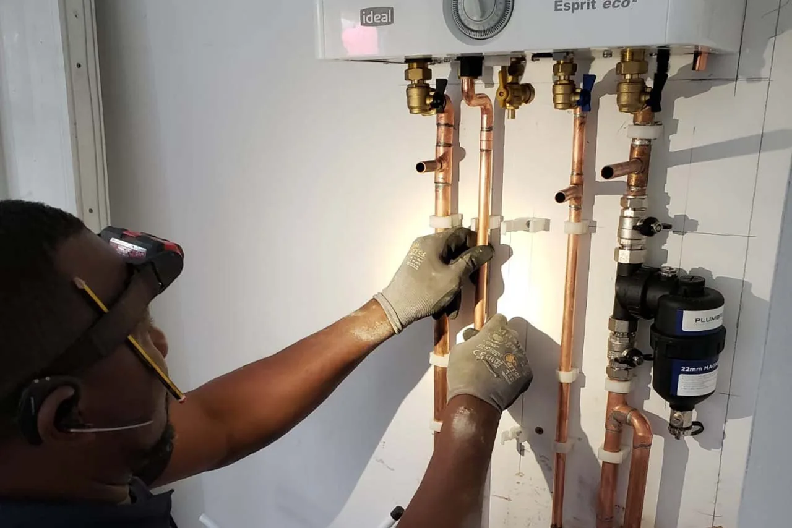
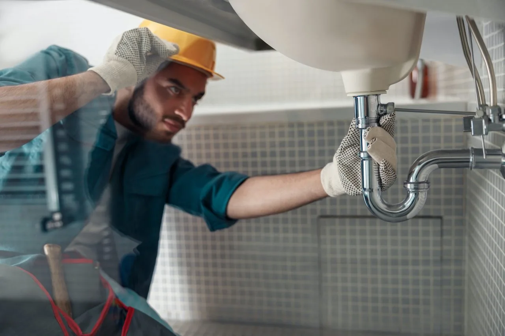
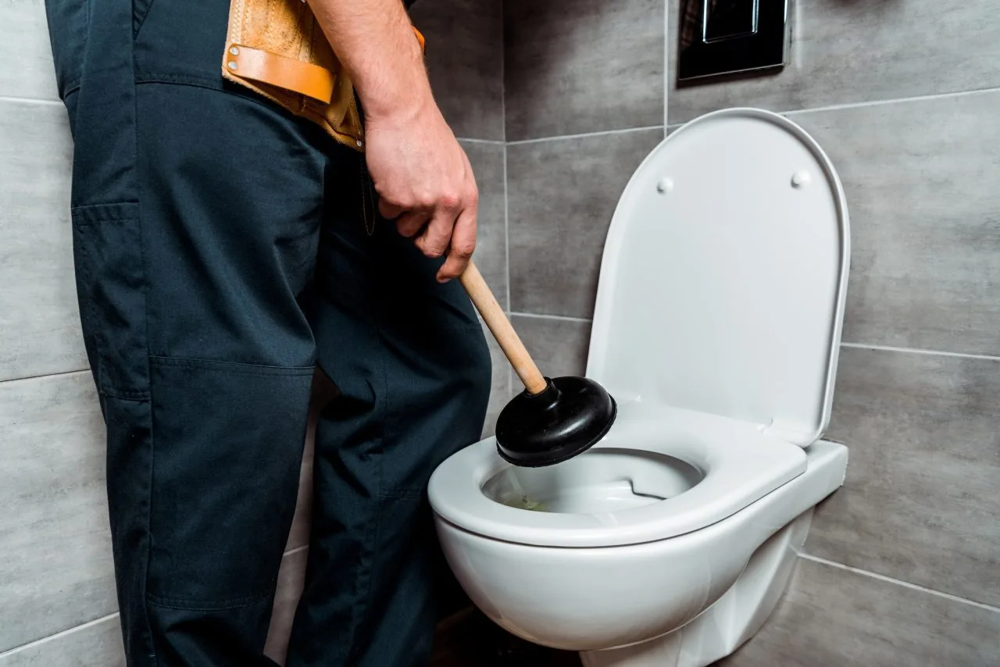
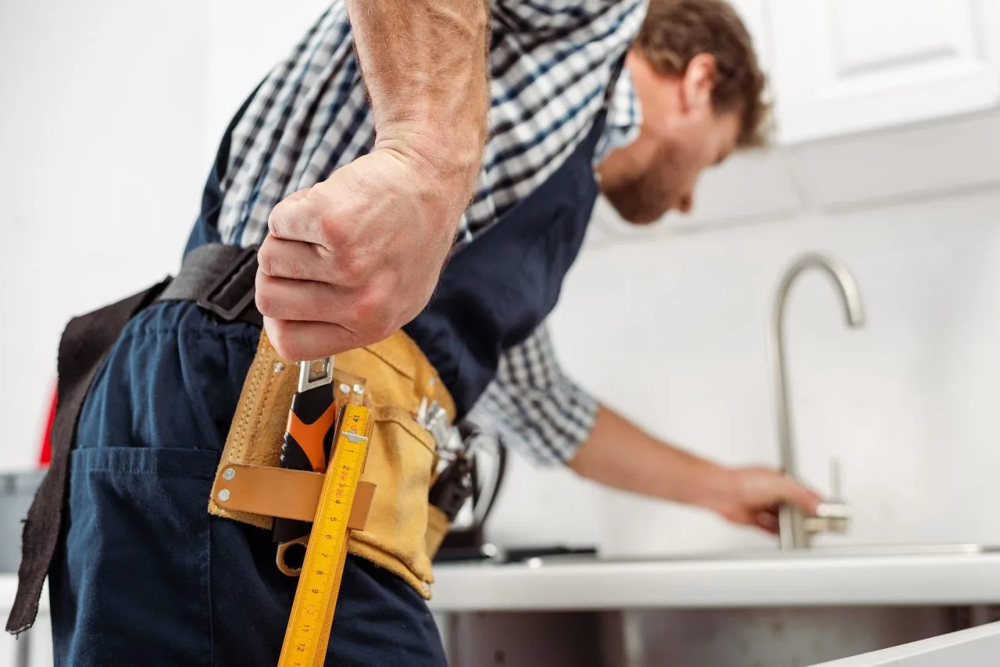
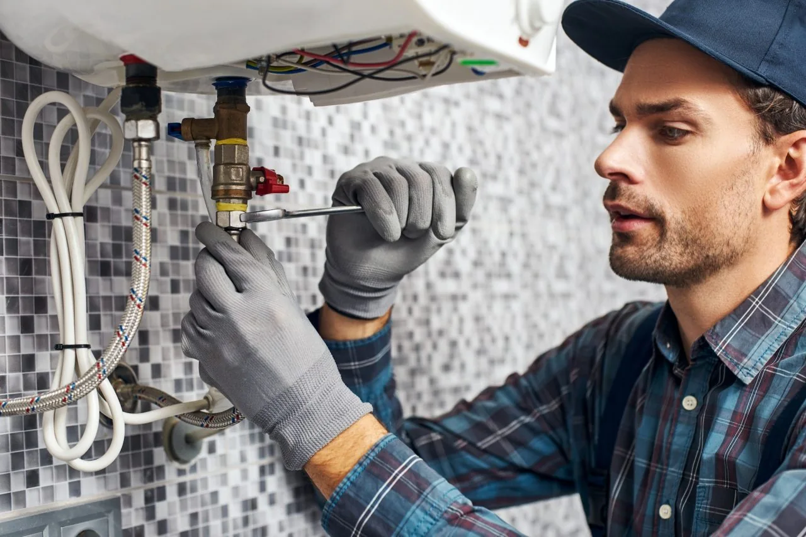

Give us a call
Tell us what has happened, your postcode and the type of property.

PLUMBING & HEATING IN SOUTH WALES
Emergency plumbing, heating repairs and planned installations. Help for your home or business in Cardiff, Barry and across South Wales.
WHAT WE CAN HELP WITH
Repairs, replacements and installations. Explore our services or give us a call to talk through the job.

01From a leaking tap to a burst pipe, practical plumbing help for homes and businesses in Cardiff, Barry and South Wales.
Boiler work, central heating, radiators and hot water. Call to discuss your heating system and arrange the next step.

03Help with blocked toilets, sinks, pipes and drains, plus drain cleaning and drainage fault finding.

04Bathroom and kitchen refurbishment plumbing, including installations, taps, sinks, toilets and bidets.

05Backflow prevention, flood-related plumbing, gutters and downpipes for homes and businesses.
NEED PLUMBING HELP?
Call, describe the issue and check availability.
Emergency Plumber Cardiff Ltd
Based in Barry and serving Cardiff and South Wales, we work on plumbing, gas and heating systems for residential and commercial properties.
Whether it’s a troublesome toilet, a boiler fault or a refurbishment, tell us what’s happening. We’ll discuss the work and how to move it forward.
More about usHOW TO ARRANGE A VISIT
Tell us what has happened, your postcode and the type of property.
We’ll talk through the job and availability for a visit.
Once the issue has been assessed, we discuss what needs doing.
HERE IN SOUTH WALES
Plumbing and heating help across South Wales. Call with your postcode to check coverage and availability.
Check your areaA FEW USEFUL ANSWERS
Call the number on this website, describe the work and provide your postcode. We’ll discuss availability and the next step.
Yes. Our plumbing and heating services cover residential and commercial properties.
Yes. Our service list includes taps, toilets, leaks, valves, radiators, drains and general pipework as well as installations.
Yes. Use the email link below. For an urgent issue or to arrange a visit, please call us.
LET’S GET IT SORTED
Tell us what you need and where you are.
We’ll discuss the job and availability.